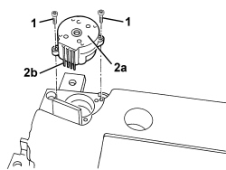

5010D40 PASSENGER COMPARTMENT AIR SENSOR FAN - R+R
- Path
- Procedures > 50 AUXILIARY UNITS > 5010 CLIMATE CONTROL - MISCELLANEOUS > 5010D AIR TEMPERATURE RECORDING SYSTEM > 5010D40 PASSENGER COMPARTMENT AIR SENSOR FAN - R+R
- Kind
- repair procedure (removal / refitting; the operation number is the code)
- Applies to
- all engines; all production periods
- Interactive page
- https://sloeber94.github.io/elrnDB-aBrrSpdr/en/#/946002258
Applies to: all engines; all production periods
 Removing
Removing
 Refitting
Refitting- Remove the three vents.
Op. 5010C34 AIR OUTLET IN CONSOLE - R+R
- Remove the radio or, alternatively, the navigation system.
Op. 5570T80 CAR RADIO EQUIPMENT - R+R
Op. 7040A17 AIR CONDITIONER CONTROLS
Op. 5040D18 AIR CONDITIONING CONTROL UNIT - R.R.
1. Undo the bolts.
2. Remove fan (2a) and disconnect electrical connection (2b).

Applies to: all engines; all production periods
Refitting
Removing- Check that the fan is not damaged.
- Fit the fan and connect the electrical connection
- Tighten the bolts.
Op. 5040D18 AIR CONDITIONING CONTROL UNIT - R.R.
Op. 7040A17 AIR CONDITIONER CONTROLS